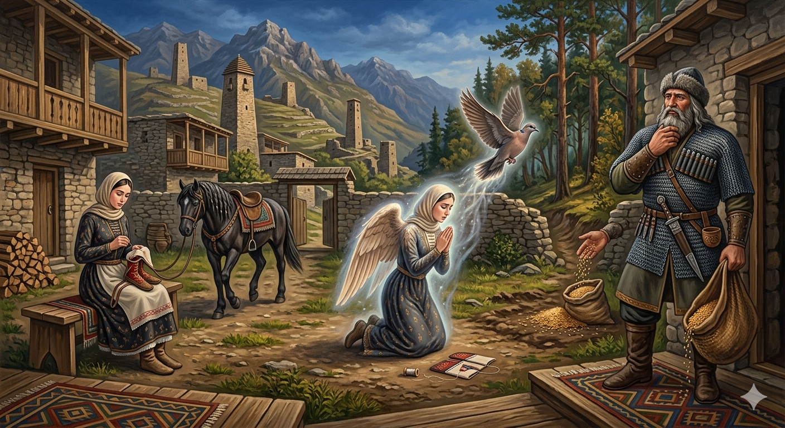

И.А. Дахкильгов. Хьехаме дувцарш - поучительные рассказы-притчи.
И.А. Дахкильгов. Хьехаме дувцарш - поучительные рассказы-притчи. Из ингушского фольклора.

Кхокха хинна дӀаяхар
Цхьанахьа лийна цӀагӀавийрзача наьтас Сеска Солсас дина дирст дӀакховдайир ший виӀий къонача сесагага. Из чувахар, хӀаьта сесаг нахьар маьче тегаш сихъенна йоаллаш хиннаяр. Говра дирста гӀад цун кара уллар. Болх беш ер йоалашехьа дӀахьежача, говра коара дӀаяха хиннай. ДӀа-хьа а ядарах, корайоагӀаш хиннаяц. Ший маьрдаьна хьалха юхьӀаьржа яьлар чӀоагӀа дега Ӏеткъа хиннад къонача кхалсага. Сов эхь хийтта, Даллагара дийхад цо шийх хьун кхокха хилийтар. Даллас жоп деннад цунга: кхокха хинна дӀаяхар из. Юха коа ваьлча, Сеска Солсана ейнаяц е ший нус а, е говра а. ГӀетта дӀабодаш бола кхокха бӀаргабейча, хӀама ховш хиннача Сеска Солсана хайр хиннар фуд. Ший нус селлара эхь кхоабаш хилар бахьан цун сий деш, Сеска Солсас хьуна йистошка хӀарача шера кӀа дӀадувш хиннадар, хьун кхокхарчашта лаьрхӀа.
РУССКИЙ
Превратилась в голубку
Как-то вернувшись к себе во двор богатырь Сеска Солса протянул повод коня молодой снохе, жене своего сына. Она в это время подшивала чувяки. Сеска Солса вошел в дом, а невестка, кинув повод коня себе на подол, решила быстро завершить свою работу. Однако конь незаметно отошел, вышел со двора, а затем и вовсе ушел неизвестно куда. Закончив работу, невестка вспомнила о коне, но нигде найти его не смогла. От величайшего стыда перед свекром сноха взмолилась, чтобы бог Дяла превратил ее в лесную голубку. Дяла внял ее просьбе. Выйдя во двор, нарт Сеска Солса не нашел ни снохи, ни коня, а увидел улетающую голубку. Он все понял, и с тех пор из уважения к своей стыдливой снохе нарт ежегодно сеял для голубей пшеницу на опушке леса.
ENGLISH
She turned into a dove
One day, upon returning to his own courtyard, the mighty warrior Sesk Solsa handed the horse's reins to his young daughter-in-law, his son's wife. She was hemming some trousers at the time. Sesk Solsa went into the house, whilst his daughter-in-law, tossing the reins onto her skirt, decided to finish her work quickly. However, the horse slipped away unnoticed, left the courtyard, and then disappeared altogether, no one knowing where it had gone. Having finished her work, the daughter-in-law remembered the horse, but could not find it anywhere. Overcome with the greatest shame before her father-in-law, she prayed to the god Dyala to turn her into a forest dove. Dyala granted her request. Stepping out into the yard, the nart Sesk Solsa found neither his daughter-in-law nor the horse, but saw a dove flying away. He understood everything, and from that time onwards, out of respect for his bashful daughter-in-law, the nart sowed wheat for the doves every year at the edge of the forest.
НОХЧИЙН
ПОГОВОРКИ
Буц а дикагӀа хул, юкъ-юкъе зизалг хилча. - И трава краше, когда в ней попадается цветочек.Даьнеи наннеи доккхагӀа дола совгӀат да яхь йола воӀ кхийча, эхь долу йоӀ кхийча. - Самый большой подарок для родителей – гордый сын и скромная дочь.Екхан эттача, малхо воагаву; оапаш бийцича, эхьо воагаву. - Если погода жаркая, солнце печет; если соврешь, совесть мучает.Саго лораде дезаш ши хӀама да: ший саи, ший сийи. - Человек обязан оберегать две вещи: свою душу и свою честь.Сийдоацача вала атта да, сийдолаш лела хала да. - Легко лишиться чести, трудно ее сохранить.Тешам – сага юхь. - Надежность во всем – лицо человека.Хьалаца хала да, дӀахеца атта да. - Поймать – трудно, отпустить – легко.Ший даьнеи наннеи мутӀахьа дола воӀ-йиша Даллана дукха дийзад. - Богом любимы и сын, и дочь, если они почитают своих родителей.Эхь доацаш вахарал ханал хьалха валар тол. - Лучше раньше времени скончаться, чем жить не по совести.Эхь-бехк е эцаш а дац, е дохкаш а дац. - Стыд да совесть и не купишь, и не продашь.Эхь-эздел къел-моцал йолча лехац. - Благородства не ищет там, где царят голод и нищета.“Эхь-эздел” оал эхьи эздели цхьана мара товш ца хиларах. - Слова “совесть” и “благородство” мы произносим вместе, т.к. они неразлучны.